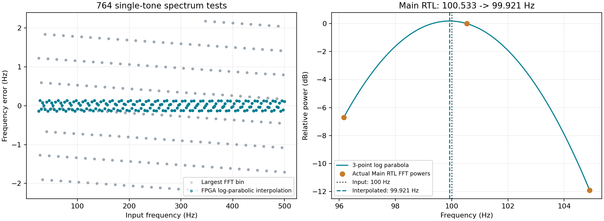
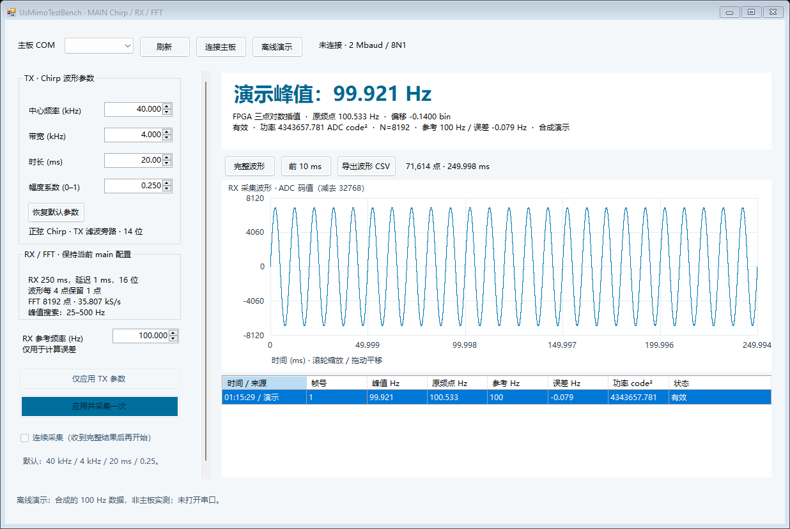

2026-10-20 · 本地实现与验证 · 新 Main SOF + M2 上位机
插值发生在 FFT 之后，利用峰值及左右邻点估计峰顶位置。log、除法和偏移均在 FPGA 完成；电脑只解析 Q16 结果并换算 Hz。Chirp、RX 250 ms、采样率、8192点和两个独立实验保持原样。
| 输入 Hz | 原频点 Hz | 插值 Hz | 原误差 Hz | 插值误差 Hz |
|---|---|---|---|---|
| 25 | 26.226044 | 24.861304 | +1.226044 | -0.138696 |
| 100 | 100.533168 | 99.921029 | +0.533168 | -0.078971 |
| 500 | 498.294830 | 500.113038 | -1.705170 | +0.113038 |
| 250 | 249.147415 | 250.115245 | -0.852585 | +0.115245 |
| 99.6 | 100.533168 | 99.477566 | +0.933168 | -0.122434 |
250 Hz案例叠加700 Hz干扰；99.6 Hz案例叠加抽取后的混叠频率附近干扰。异常削顶、短帧、空帧都不会被当作有效插值。功率仍报告原最大频点的功率。

左图：NumPy生成量化频谱，实际RTL完成插值（191频率×4相位）；右图：完整Main RTL产生的100 Hz频谱。左图最大绝对误差从2.1806 Hz降至0.1404 Hz；另60组25 dB单音输入最大插值误差约0.1479 Hz。测试条件不同于论文图中的毫米测距指标。
频率格仍为4.371007 Hz。新增插值最大140个50 MHz周期，约2.8 μs；不是减少现有FFT运算。资源为7190 ALM（13%）、31 DSP（20%）、307 RAM块（45%）；相比旧Main多584 ALM、874寄存器和1 DSP，块RAM用量不变。
新软件兼容旧M1；旧固件会标明“未提供插值”。新固件使用76字节M2，需配套新版查看器。尚未进行这版固件的实板验证。

界面截图为离线合成演示，不是实板测量。
在Simulation/FFT中运行 python run_main.py --interp、--fast-memory、--system、--short 或 --io。沿用原来的两个FFT测试台文件。
检查数据 · 对比CSV · 源码/日志证据 · 算法、协议与使用说明
插值提升孤立峰的位置估计，不改变采集时长或物理分辨能力；不能保证噪声、多目标、非稳态或实板条件下都达到上述误差。没有新增FPGA混频或距离换算。